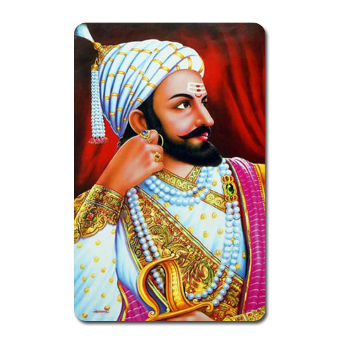

Chatrapati Shivaji Maharaj
1627 - 1680
Shivaji Bhosale- A 17th-century warrior of India
शिवाजी शहाजी भोसलेChhatrapati Shivaji Maharaj also spelled as Sivaji was born on 19 February 1630. He was born at Shivneri which is a hill fort in Junnar in Poona, now known as Pune. Chhatrapati Shivaji Maharaj took birth into a family of bureaucrats. His father Shahji Bhonsale was a great Maratha general in the army of Bijapur Sultanate and his mother Jijabai was a great devotee of religion. He was the founder of the great Maratha kingdom of India. He was one of the bravest and marvelous rulers in the 17th century
Biographies
- Chhatrapati Shivaji Maharaj was one of the most fabulous kings of Indian history.
- Shivaji Maharaj was born on 19" February 1630, at Shivneri fort in Pune, Maharashtra.
- His father's name was Shahaji Bhosale, and his mother's name was Jijabai.
- Shivaji Maharaj was India's founder and creator of the Maratha Empire.
- The battle technique of Shivaji Maharaj was called Ganimi kava.
- He respected all religions in the same manner.
- Shivaji Maharaj was a dependable supporter of women and their honor.
- His birthday is celebrated as Shiv Jayanti Or Chhatrapati Shivaji Maharaj Jayanti.